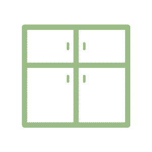
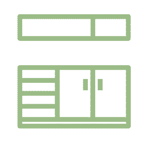

×

Cabinets
For most people, lighter-colored or natural-colored wood with a grain is preferable to slicker materials. However, when wood is utilized in a space, it should not exceed 45% of a room's surfaces, so as to maintain its stress-reducing properties.
×

Counters
Keep countertop space minimal and decluttered if one's life is chaotic and confusing; the space should be reserved for practical objects. If one's life is too routinized, feel free to add some less practical decor (i.e. candles, mementos, etc.).
×
Plants
By evolution, humans are drawn to the color green. As such, green elements in a space are healthy and comforting. Potted herbs, a few succulents, or 1-2 larger plants are good, noninvasive ways of decorating with plants.